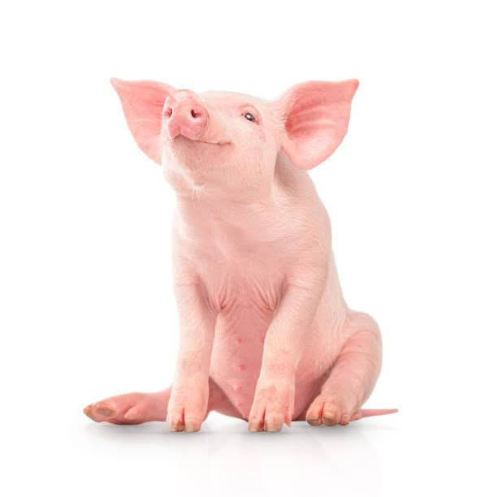
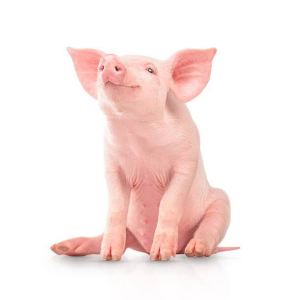

Machine Learning
Hello and welcome to the Machine Learning section of the I2 course! Our content will be split into two categories: literacy and technical tracks. These topics are fundamental to the entire rest of our course, so please don’t hesitate to reach out to the course staff if you have any questions!
Technical Track Content
Task 1:
Navigate to the relevant section of the I2 Grimoire using the link below. Read the textbook and answer all synthesis questions to the best of your ability. Be sure to save these somewhere for future reference.
I2 Grimoire: Machine Learning
Task 2:
Solve the coding challenges within the Jupyter notebook linked below (through Colab). If you encounter any issues with the notebook not functioning as described, please let us know!
Please ask questions as you work through this project. Be sure to discuss with others in your group if you have one! Share your answers as you like, the goal is to learn and we’re not holding grades over your head.
This project will be going over k-means clustering and PCA (unsupervised ML). We will be using the Scikit-Learn library.
Check out this handy image that gives popular sk-learn clustering algorithms and their usages:

Also this image visualizing the clustering algorithms:

Read up on k-means clustering in the provided link (Images provided above also contained here). Feel free to check out the other algorithms as well: SK-Learn Clustering
Now, follow the instructions on this Jupyter notebook (hosted on Google Colab) to implement some of the things we talked about! Be sure to save a local copy of the template so you can edit it.
Colab Link: Machine Learning Colab Template (30 min)
When you are finished with your code, independently verify that it works and have fun with it! You could try this method on different datasets, such as this one for example. If you add any additional functionality be sure to talk about it with others and give them ideas.
Remember that this is all for your learning, so do your best and don’t stress!
Congratulations! You now understand the basics of Clustering and PCA!
Literacy Track Content
Task 1:
Read the article below, and answer any synthesis questions placed along the way.
This article is going to cover what machine learning is at a conceptual level.
The general idea behind machine learning is that a machine uses known information to make predictions about unknown information—much like humans. For a long time, we used computer programming to manually give computers instructions on how to do things. But there are a lot of things that we may want computers to do that are far too advanced to manually instruct them on. The goal of machine learning, then, is to get computers to “learn” how to do tasks so that we don’t have to give it explicit instructions.
To better understand this, let’s look at an example.
Imagine we want our computer to identify pictures of cats and pictures of pigs.
Our computer has never seen a pig or a cat before, so we have to give it some information to help it get started. Let’s feed our computer the following images. We’ll label the pictures of cats “cat” and the pictures of pigs “pig,” so the computer knows which is which.


 

Now the computer has to figure out what makes the cat pictures different from the pig pictures. What does it notice? Well, all the cats are furry and all the pigs are pink. So the computer comes up with the following system:
- if the picture has a furry, non-pink animal, it’s a cat
- if the picture has a non-furry, pink animal, it’s a pig
- otherwise the computer isn’t sure
Okay, let’s see how it does! We give the computer these three pictures and ask it to classify them as “cat” or “pig.”

The computer classifies the first animal, which is furry and not pink, as a cat—perfect! But it classifies the second, which is not furry and pink, as a pig, and the third, which is furry and not pink, as a cat.
Now we have to correct our computer. We let it know that it was right about the first image, but the other two were wrong.
Here’s where the crucial part of machine learning comes in: the computer looks at the images again and learns why it was wrong. It realizes that not all cats are furry and not all pigs are pink. Maybe it also realizes that all the cats we provided have long tails, and all the pigs have long snouts.
Whatever the case, the computer learns how to better classify the animals based on the data we provided. It learns which features are crucial and which features are optional in its decision, and the more data we provide, the more it refines its processes and produces accurate predictions. This occurs over many, many, many trials, until it finally begins to make perfect predictions. This is the very general idea of how machine learning works.
But what does it mean for a computer to “learn”? How does a machine “learn” anything, the way humans learn? For that matter, how can the computer tell that the pictures of cats have fur in them, or that the pictures of pigs contain long snouts?
These are exactly the questions that this course aims to answer. We’ll learn how humans learn, how machines learn, and how our understanding of one allows us to develop our understanding of the other. We’ll also learn how humans interpret images and pictures, and how we can use that information to get computers to do the same thing.
Synthesis Questions
What are the limitations of early “if this, then that” logic?Why do we need a teach-build cycle to get our machine to learn?Why does this teach-build-teach-build cycle work? How do the "bots" get better over time?Why is it so important for companies to use a good dataset to teach their bots?
TODO: Add more to the literacy article
Task 2:
Complete the following writing activity.
The non-technical project for this unit will involve some writing! Choose 3 of the prompts below and write at least 200 (meaningful!) words on each one! We will not be strictly grading you on correctness or anything like that. This is an opportunity to deeply engage with the material you have just learned about, and creatively connect it to neuroscience!
- TODO: Create prompts based off literacy article